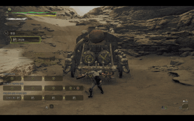

쌍검은 빠른 연타와 극단적인 공격성을 갖춘 근접 무기로, 귀인화를 통해 게이지를 쌓고 귀인연참과 난무를 통해 게이지를 소모하는 운용이 주를 이룹니다.
발도와 동시에 몰아치는 타격은 마치 춤을 추는 듯한 느낌을 주며, 적의 약점을 집요하게 파고들 수 있습니다.
짧은 리치를 극복하기 위해 저스트 회피와 여러 이동 스킬을 통해 몬스터와의 거리를 좁히며 싸워야 합니다.

쌍검
대검 특성 요약
| 무기 | 상쇄 | 가드 | 전용자원 | 난이도 |
|---|---|---|---|---|
| 쌍검 | ❌ | ❌ | ✅ | 3 |
한손검 기본 조작
| 동작 | PC | Xbox/콘솔 | 설명 |
|---|---|---|---|
| 2단베기 | Y | 기본적인 연속 공격입니다. Y를 누르시면 2단 베어돌리기가, Y를 다시 누르시면 차륜베기가 발동됩니다. |
|
| 베어밀치기 | B | LS 방향으로 전진하는 공격입니다. B를 다시 누르시면 회전베기로 파생됩니다. |
|
| 귀인화 | RT | 전진하며 사용하는 베어올리기 공격. 높낮이가 다른 곳이나 경사면을 향해 사용하면 지형에 맞는 액션으로 파생된다. | |
| (귀인화 파생) 난무 I | Y + B | ||
| (난무 I 파생) 난무 II | Y + B | ||
| (난무 II 파생) 난무 III |
|
Y + B | 귀인화하면 공격, 이동, 회피가 강화되고 움츠리기 무효가 된다. 난무는 귀인 게이지를 소비하는 강력한 연속 공격이다. |
| 귀인연참 I |
|
Y + B | |
| (귀인연참 I 파생) 귀인연참 II |
|
Y + B |
귀인연참은 귀인 게이지를 소비하며, 귀인 강화 상태에서만 사용할 수 있는 연속 공격입니다. LS 방향으로 이동하면서 공격하실 수 있습니다. 난무와 귀인연참은 RT로 상호 파생시킬 수 있습니다. |
| 귀인회피(귀인화/귀인 강화 상태 시) | A | 일반 회피보다 빠른 회피. 저스트 회피에 성공하면 공격하면서 회피하고, 잠시 강화 상태가 된다. | |
| 집중 난무 [회천] | LT + RB |
상처에 효과적인 참격. 상처에 명중하면 공중 회전난무로 몬스터의 몸을 세로로 공격해서 여러 개의 상처를 파괴할 수 있다. |
귀인화 연계
RT
Y
Y
Y
귀인화 기본 연계
쌍검의 기본적인 운용은 귀인화를 통해 귀인 게이지를 쌓는 것으로 시작합니다.
기본적으로 Y는 고정된 자리에서 공격,
B는 이동을 하며 포지셔닝을 도와줍니다.

난무 III
Y
+
B
반복
난무 III으로 마무리하는 극딜
귀인강화 상태에서 귀인연참과 귀인화 상태의 난무를 번갈아가며 사용하다 난무 III으로 끝내는 콤보입니다.
귀인연참의 경우 사용중 이동이 가능해 유연한 위치 선정이 가능합니다.
난무의 경우 사용중 이동이 불가하나 더욱 강력한 딜링이 가능합니다.